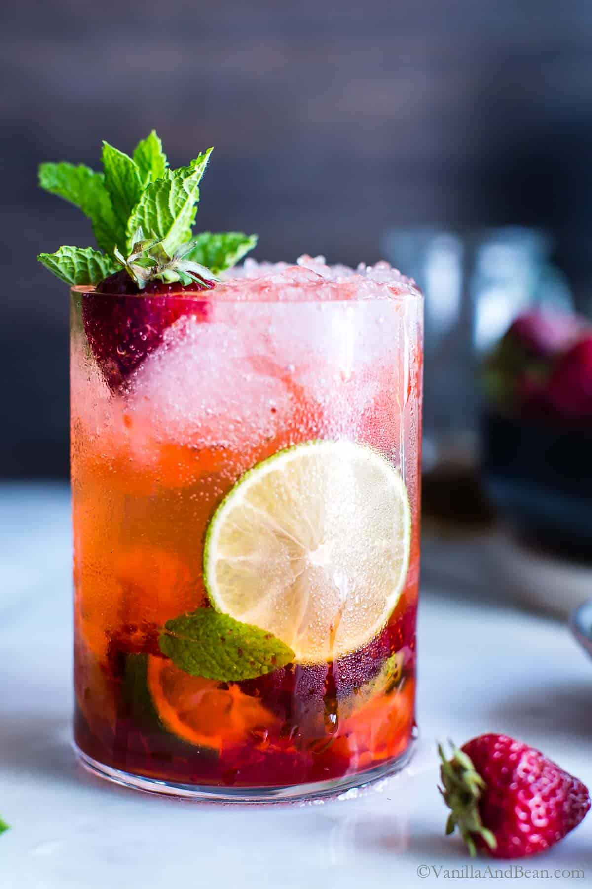

This strawberry mojito recipe makes the perfect drink for a hot summer day!
I had this drink at a popular chain restaurant and decided to try it at home.
I have served it at several different gatherings,
and it has always been given rave reviews.
- white sugar
- 2 large slimes, quartered
- 1/2 bunch mint leaves
- 7 strawberries, quartered
- 1 cup white sugar
- 2 cups club soda
- 1 cup white rum
- 8 cups ice cubes
- Pour about 1/2 inch of sugar onto a small, shallow plate. Run a lime wedge around the rims of 8 cocktail glasses, then dip the rims into sugar to coat; set aside.
- Squeeze all of the lime wedges into a sturdy glass pitcher. Toss juiced limes into the pitcher along with mint, strawberries, and 1 cup sugar. Crush with a muddler to release strawberry juice and mint oil. Stir in club soda and rum until sugar has dissolved.
- Pour into the prepared glasses over ice cubes to serve.